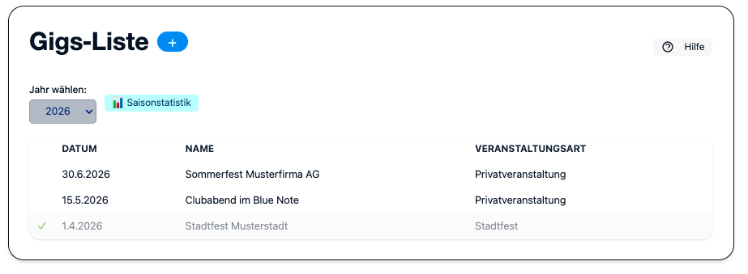
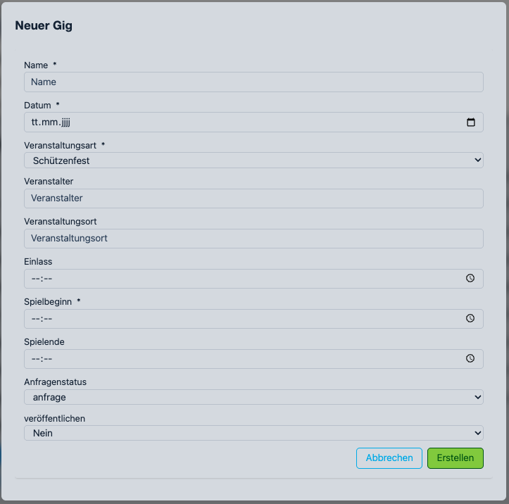
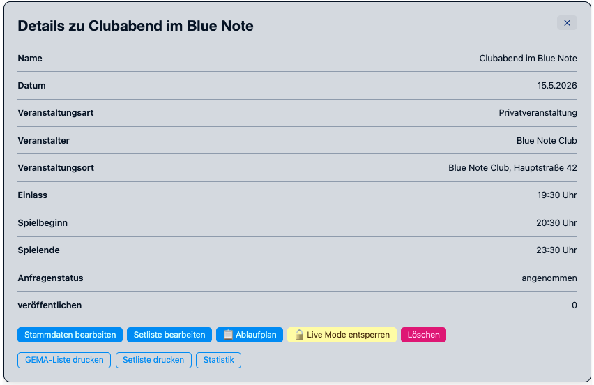
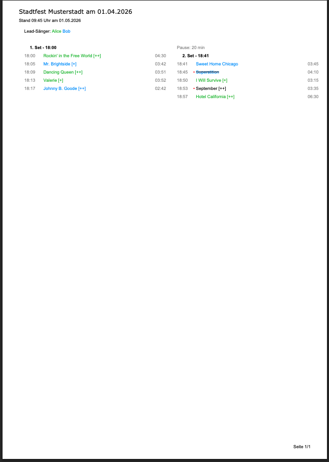
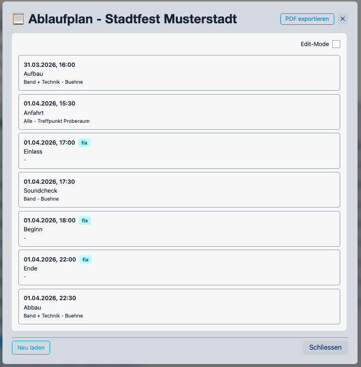
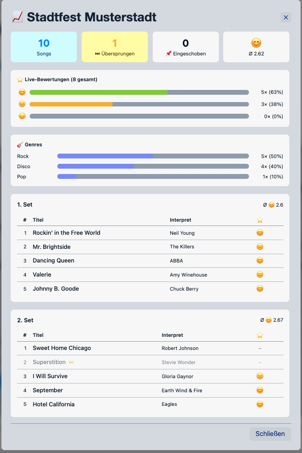
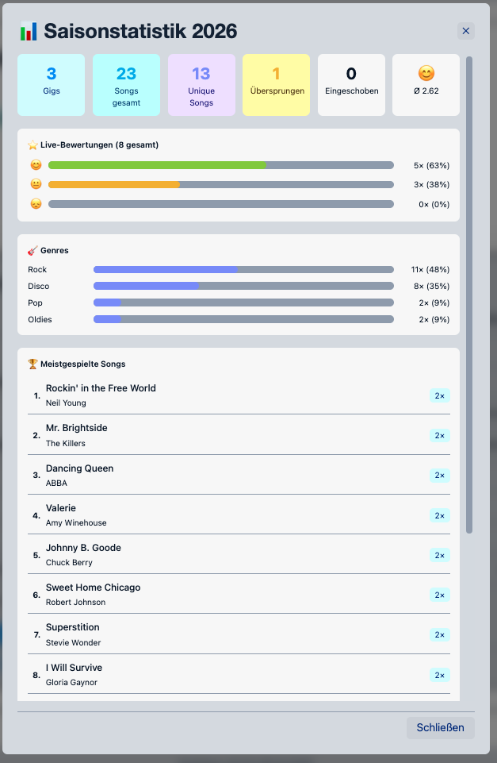

Gigs
Im Bereich Gigs werden alle Konzerte und Auftritte der Band verwaltet. Admins und Editors können Gigs anlegen, bearbeiten und löschen.
{kind=link}

Gig anlegen
Klicke auf + Neuer Gig, um das Formular zu öffnen.
{kind=link}

Feld |
Beschreibung |
|---|---|
Name |
Bezeichnung des Auftritts (z. B. „Stadtfest Hauptbühne“) |
Datum |
Datum des Auftritts |
Typ |
Veranstaltungstyp (aus |
Veranstalter |
Name des Veranstalters |
Location |
Ort / Adresse des Auftritts |
Einlass |
Uhrzeit des Einlasses |
Beginn |
Uhrzeit des Auftrittsbeginns |
Ende |
Geplantes Ende des Auftritts |
Kommentar |
Interne Anmerkungen (nicht öffentlich) |
Status-Workflow
{kind=link}

Status |
Bedeutung |
|---|---|
anfrage |
Auftrittsanfrage eingegangen, noch keine endgültige Zusage |
angenommen |
Auftritt ist fest zugesagt und findet statt |
abgelehnt |
Anfrage wurde abgelehnt |
Setlist verwalten
Jeder Gig hat eine eigene Setlist, die im Setlist-Editor bearbeitet wird. Klicke auf Setlist in der Gig-Zeile, um den Editor zu öffnen.
Setlist-PDF generieren
Der Button Setliste drucken erzeugt ein druckfertiges PDF der Setlist mit allen Sets, Songs, Tonarten, Dauern, Sängern sowie Gesamtspieldauer und Pausenzeiten.
{kind=link}

Ablaufplan-PDF generieren
Der Button Ablaufplan erzeugt ein zeigt den zeitlichen Ablauf eines Gigs.
{kind=link}

Enthalten sind:
Gig-Stammdaten (Name, Datum, Typ, Veranstalter, Ort, Einlass/Beginn/Ende)
Alle Ablauf-Einträge in einer tabellarischen Ansicht (Zeit, Was, Wer, Wo)
Automatische Zeilenumbrüche bei langen Texten
Hochformat (A4) mit optimierten Spaltenbreiten
Das Layout ist modernisiert und enthält ein dezentes Logo-Wasserzeichen.
Die Farbgestaltung passt sich automatisch an das hinterlegte Logo an
(LogoCustom.png bzw. Logo.png).
GEMA-Export (Excel)
Der Button GEMA erzeugt ein Excel-Dokument im offiziellen GEMA-Meldeformat. Songs, die im Live-Modus als übersprungen markiert wurden, werden automatisch ausgeschlossen.
Das Dokument enthält je Song: Titel, Interpret, Komponist, Texter, Bearbeiter, Verlag, Dauer.
Statistiken
Der Button Statistiken öffnet ein Modal mit der Auswertung des Gigs: gespielte / übersprungene Songs, Bewertungsverteilung, Spielzeit vs. Plan.
{kind=link}

Der Button Saison-Statistiken zeigt aggregierte Daten aller Gigs der laufenden Saison.
{kind=link}

Verfügbarkeit
Im Tab Übersicht des Gig-Detail-Dialogs zeigt eine kompakte Karte die aktuellen Verfügbarkeitsrückmeldungen der Bandmitglieder (Zähler ✅/❓/❌, farbige Name-Badges, eingetragene Aushilfen). Der Link Details → öffnet direkt den Tab Verfügbarkeit, in dem jedes Mitglied seinen Status setzen und eine Aushilfe benennen kann.
Vollständige Dokumentation: Verfügbarkeitsmanagement.
Gig-Checkliste
Über den Tab ✅ Checkliste (Tab 6) kann eine strukturierte Aufgabenliste für die Gig-Vorbereitung gepflegt werden. Admins und Editors können Aufgaben anlegen, mit Kategorie, Verantwortlichem und Fälligkeitsdatum versehen sowie abhaken.
Eine kompakte Fortschrittsanzeige ist auch direkt im Tab Übersicht sichtbar.
Vollständige Dokumentation: Gig-Checkliste.
Setlisten-Sperre
Um die Datenkonsistenz vergangener Auftritte zu schützen, gilt folgende Regelung:
Bis eine Woche nach dem Gig-Datum können Admins und Editors die Setliste und den Ablaufplan wie gewohnt bearbeiten.
Mehr als sieben Tage nach dem Gig-Datum ist die Bearbeitung für Editors gesperrt. Der Button Setliste bearbeiten wird deaktiviert (ausgegraut mit Schloss-Symbol 🔒) und zeigt einen Tooltip mit dem Hinweis. Admins können weiterhin Änderungen vornehmen; sie erhalten im Ablaufplan-Tab einen gelben Hinweis.
Der Sperrmechanismus gilt für die Setliste (Song-Reihenfolge) und den Ablaufplan (Zeitplan-Einträge). Die Checkliste ist davon nicht betroffen.